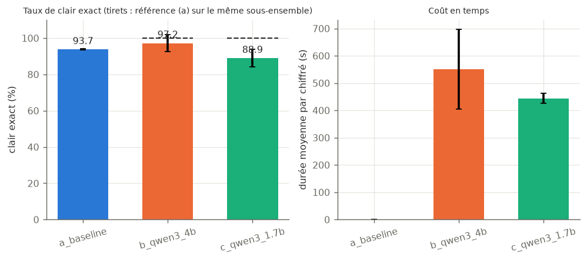
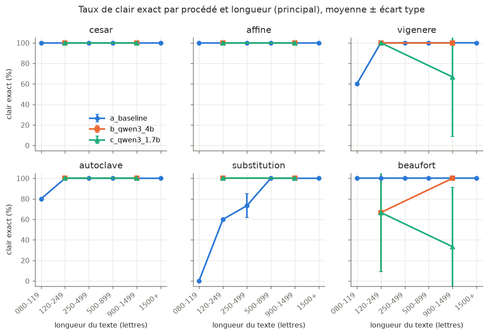
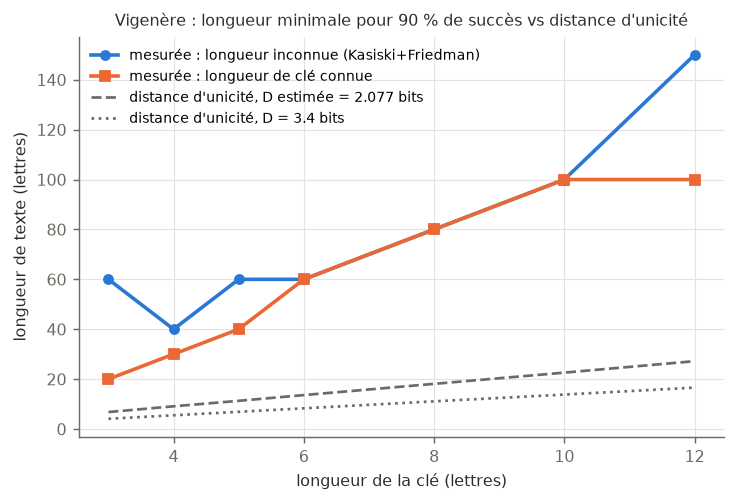
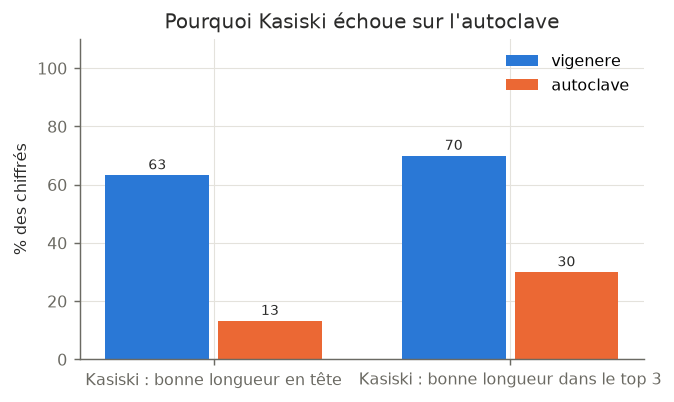
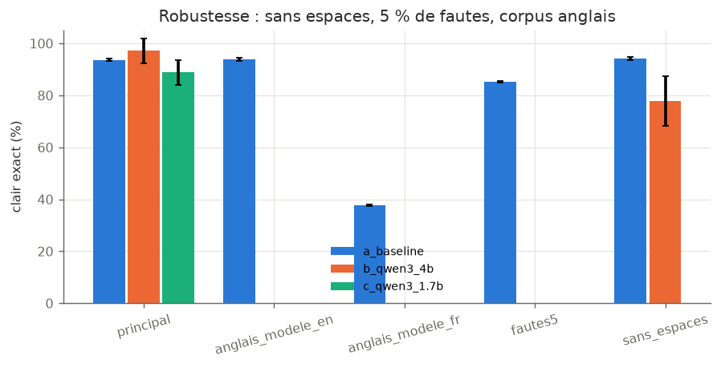

Vigenère-Squad — résultats
Système multi-agents (LLM local) de cryptanalyse des chiffres classiques. Page générée automatiquement depuis metrics.json (version 1.0.0).
a_baseline93.7 %clair exact · 180 chiffrés · 2.03 itér.
b_qwen3_4b97.2 %clair exact · 12 chiffrés · 2.64 itér.
c_qwen3_1.7b88.9 %clair exact · 12 chiffrés · 4.39 itér.
Étude d'ablation (corpus principal)
| configuration | chiffrés | clair exact % | réf. (a) même sous-ensemble % | procédé correct % | itérations | durée (s) | replis % | appels refusés | mémoire / chiffré (Mo) |
|---|
| a_baseline | 180 | 93.7 ± 0.3 | – | 99.4 | 2.0 | 0.4 | 0.0 | 0 | 76 |
| b_qwen3_4b | 12 | 97.2 ± 4.8 | 100.0 | 86.1 ± 4.8 | 2.6 ± 0.8 | 550.7 ± 145.8 | 61.1 ± 9.6 | 0 | 63 + 42 (Ollama) |
| c_qwen3_1.7b | 12 | 88.9 ± 4.8 | 100.0 | 86.1 ± 17.4 | 4.4 ± 0.2 | 444.1 ± 18.8 | 100.0 | 0 | 63 + 42 (Ollama) |

Taux de clair exact par procédé et par tranche de longueur
a_baseline
| procédé | 080-119 | 120-249 | 250-499 | 500-899 | 900-1499 | 1500+ | longueur min. 90 % |
|---|
| cesar | 100.0 | 100.0 | 100.0 | 100.0 | 100.0 | 100.0 | 080-119 |
| affine | 100.0 | 100.0 | 100.0 | 100.0 | 100.0 | 100.0 | 080-119 |
| vigenere | 60.0 | 100.0 | 100.0 | 100.0 | 100.0 | 100.0 | 120-249 |
| autoclave | 80.0 | 100.0 | 100.0 | 100.0 | 100.0 | 100.0 | 120-249 |
| substitution | 0.0 | 60.0 | 73.3 ± 11.6 | 100.0 | 100.0 | 100.0 | 500-899 |
| beaufort | 100.0 | 100.0 | 100.0 | 100.0 | 100.0 | 100.0 | 080-119 |
b_qwen3_4b
| procédé | 080-119 | 120-249 | 250-499 | 500-899 | 900-1499 | 1500+ | longueur min. 90 % |
|---|
| cesar | – | 100.0 | – | – | 100.0 | – | 120-249 |
| affine | – | 100.0 | – | – | 100.0 | – | 120-249 |
| vigenere | – | 100.0 | – | – | 100.0 | – | 120-249 |
| autoclave | – | 100.0 | – | – | 100.0 | – | 120-249 |
| substitution | – | 100.0 | – | – | 100.0 | – | 120-249 |
| beaufort | – | 66.7 ± 57.7 | – | – | 100.0 | – | 900-1499 |
c_qwen3_1.7b
| procédé | 080-119 | 120-249 | 250-499 | 500-899 | 900-1499 | 1500+ | longueur min. 90 % |
|---|
| cesar | – | 100.0 | – | – | 100.0 | – | 120-249 |
| affine | – | 100.0 | – | – | 100.0 | – | 120-249 |
| vigenere | – | 100.0 | – | – | 66.7 ± 57.7 | – | non atteinte |
| autoclave | – | 100.0 | – | – | 100.0 | – | 120-249 |
| substitution | – | 100.0 | – | – | 100.0 | – | 120-249 |
| beaufort | – | 66.7 ± 57.7 | – | – | 33.3 ± 57.7 | – | non atteinte |

Longueur minimale de succès à 90 % (lettres)
| procédé | procédé connu (outil adapté) | référence (a), procédé inconnu |
|---|
| affine | 20 | 40 |
| autoclave | 150 | 80 |
| beaufort | 80 | 80 |
| cesar | 20 | 60 |
| substitution | > max | > max |
| vigenere | 80 | 80 |
Lien avec Shannon : distance d'unicité
| longueur de clé | min. 90 % (longueur inconnue) | min. 90 % (longueur connue) | U estimée | U littérature |
|---|
| 3 | 60 | 20 | 6.8 | 4.1 |
| 4 | 40 | 30 | 9.1 | 5.5 |
| 5 | 60 | 40 | 11.3 | 6.9 |
| 6 | 60 | 60 | 13.6 | 8.3 |
| 8 | 80 | 80 | 18.1 | 11.1 |
| 10 | 100 | 100 | 22.6 | 13.8 |
| 12 | 150 | 100 | 27.2 | 16.6 |

Autoclave : pourquoi Kasiski échoue
| procédé | bonne longueur en tête % | dans le top 3 % | répétitions | IC colonnes (vraie longueur) |
|---|
| autoclave | 13.3 | 30.0 | 40.7 | 0.0426 |
| vigenere | 63.3 | 70.0 | 97.7 | 0.0754 |

Robustesse, défaillances et injection de consignes
| expérience | configuration | chiffrés | clair exact % | lettres justes % | replis % | erreurs LLM | garde-fous |
|---|
| defaillances | b_qwen3_4b | 6 | 88.9 ± 9.6 | 94.8 ± 8.9 | 77.8 ± 9.6 | 106 | 0 |
| injection | b_qwen3_4b | 3 | 88.9 ± 19.2 | 94.4 ± 9.6 | 88.9 ± 19.2 | 12 | 14 |
| robustesse_anglais_modele_en | a_baseline | 180 | 93.9 ± 0.6 | 98.0 ± 0.4 | 0.0 | 0 | 0 |
| robustesse_anglais_modele_fr | a_baseline | 180 | 37.6 ± 0.3 | 69.7 ± 1.5 | 0.0 | 0 | 0 |
| robustesse_fautes5 | a_baseline | 180 | 85.2 ± 0.3 | 97.9 ± 0.0 | 0.0 | 0 | 0 |
| robustesse_sans_espaces | a_baseline | 180 | 94.3 ± 0.6 | 98.7 ± 0.3 | 0.0 | 0 | 0 |
| robustesse_sans_espaces | b_qwen3_4b | 6 | 77.8 ± 9.6 | 94.9 ± 8.8 | 61.1 ± 9.6 | 6 | 0 |

Explications du Pédagogue
{
"b_qwen3_4b": {
"exercices_valides_pct": 70.0,
"n_explications": 10,
"taux_exact_echantillon": 100.0
}
}Environnement et intégrité
{
"python": "3.12.3",
"plateforme": "Linux-7.0.0-1017-azure-x86_64-with-glibc2.39",
"processeur": "x86_64",
"memoire_totale_go": 15.6,
"ollama_version": "0.40.16",
"modeles": {
"qwen3:1.7b": {
"digest": "8f68893c685c3ddff2aa3fffce2aa60a30bb2da65ca488b61fff134a4d1730e7",
"taille_octets": 1359293444,
"quantification": "Q4_K_M"
},
"qwen3:4b": {
"digest": "359d7dd4bcdab3d86b87d73ac27966f4dbb9f5efdfcc75d34a8764a09474fae7",
"taille_octets": 2497293931,
"quantification": "Q4_K_M"
}
},
"commit": "380f2e56f0c4a675a82d1ad36813620a194dd359"
}